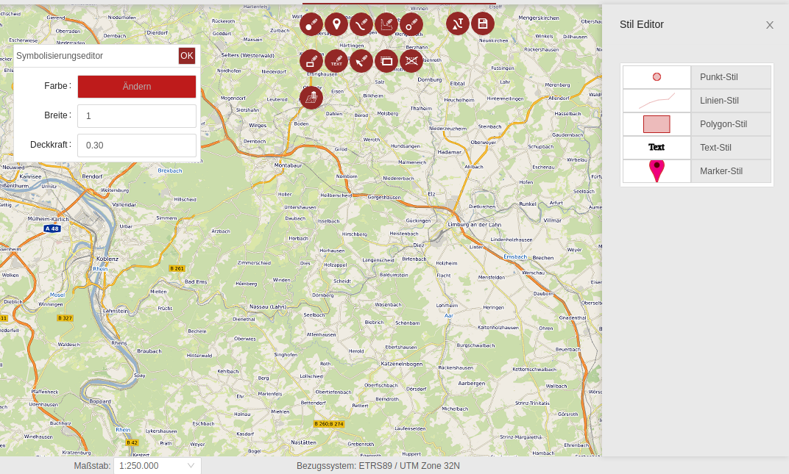
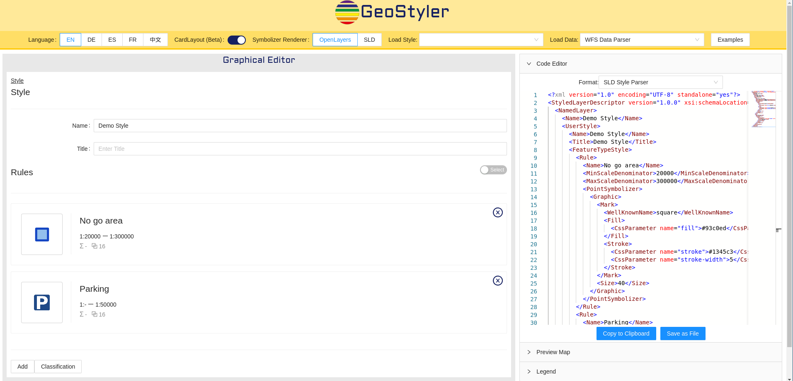

GeoStyler – Generic Styler for Geodata
Johannes Weskamm, terrestris GmbH & Co. KG
Jan Suleiman, terrestris GmbH & Co. KG
Daniel Koch, terrestris GmbH & Co. KG
Kai Volland, terrestris GmbH & Co. KG
Marc Jansen, terrestris GmbH & Co. KG
Christian Mayer, meggsimum
Johannes Weskamm

- Diploma in Geography
- Full-Stack Developer @terrestris
Bonn, Germany - GeoStyler Core Developer
Contents
- What is GeoStyler?
- How to use it?
- The demo website
- Code integration
- On the commandline
- The REST API
- Latest features
- What's next?
- Getting help and information
What is GeoStyler?
- A set of tools that help creating and converting between different style formats
- Open Source, based on TypeScript
- Official OSGeo Community Project

See osgeo.org
What is GeoStyler?
Currently supported style formats:
- SLD (1.0 and 1.1)
- Mapfiles for MapServer
- QGIS
- CQL (Filters)
- OpenLayers
- MapBox
- GeoCSS
What is GeoStyler?
- Graphical editor for styling geodata
- Converter of styling formats
What is GeoStyler?
Graphical editor for styling geodata
What is GeoStyler?
Graphical editor for styling geodata

What is GeoStyler?
Graphical editor for styling geodata
What is GeoStyler?
Converter of styling formats
What is GeoStyler?
Converter of styling formats
Demo Style
Demo Style
Demo Style
Rule 1
circle
{
"name": "Demo Style",
"rules": [
{
"name": "Rule 1",
"symbolizers": [
{
"kind": "Mark",
"wellKnownName": "circle"
}
]
}
]
}
What is GeoStyler?
Converter of styling formatsWhat is GeoStyler?
Converter of styling formats
LAYER
NAME "point_simple_point"
TYPE POINT
DATA "../shapes/points.shp"
EXTENT -180 -90 180 90
METADATA
"wms_title" "point_simple_point"
"wms_srs" "EPSG:4326"
END
CLASS
STYLE
SYMBOL "circle"
COLOR 0 255 0
SIZE 15
END
END
END
Demo Style
Demo Style
Demo Style
Rule 1
circle
How to use it?
Several ways how you can use GeoStyler:
- The demo website (limited, just a showcase!)
- Code integration
- On the commandline
- The REST API
How to use it?
The demo website https://geostyler.github.io/geostyler-demo/
How to use it?
Codehttps://github.com/geostyler
How to use it?
On the commandlineGeoStyler CLI
Conversion between styling formats:
geostyler -s qgis -t sld -o output.sld input.qml
How to use it?
The REST APISee geostyler-rest
Latest features
Latest features
Card layout
Latest features
Enhanced GeoServer Plugin

Latest features
Support for expressions
- Using functions in styles
- Allows setting style properties attributively and feature-based
- Allows for more compact and dynamic styles
- Currently supported in GeoStyler style, SLD and CQL parser. More to come...
What's next?
More styling formats
?? geostyler-arcgis-parser ??on-going discussion...
QGIS Plugin
Import/Export Styles in QGISNext GeoStyler Code Sprint
Bugfixing, New Features, Community BuildingWhen? TBA
Getting help and information
The Project Website
Thank you for your attention
Imprint
Authors
terrestris GmbH & Co. KG
Kölnstr. 99, 53111 Bonn
Germany
meggsimum
Schillerstraße 2a, 67112 Mutterstadt
Germany
Kölnstr. 99, 53111 Bonn
Germany
meggsimum
Schillerstraße 2a, 67112 Mutterstadt
Germany
Johannes Weskamm
Jan Suleiman
Marc Jansen
Daniel Koch
Kai Volland
Christian Mayer
Jan Suleiman
Marc Jansen
Daniel Koch
Kai Volland
Christian Mayer
License
Slides are published under CC BY-SA
license.
terrestris.github.io/eurocarto2022/geostyler
PDF-Version,
git repository